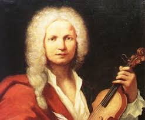
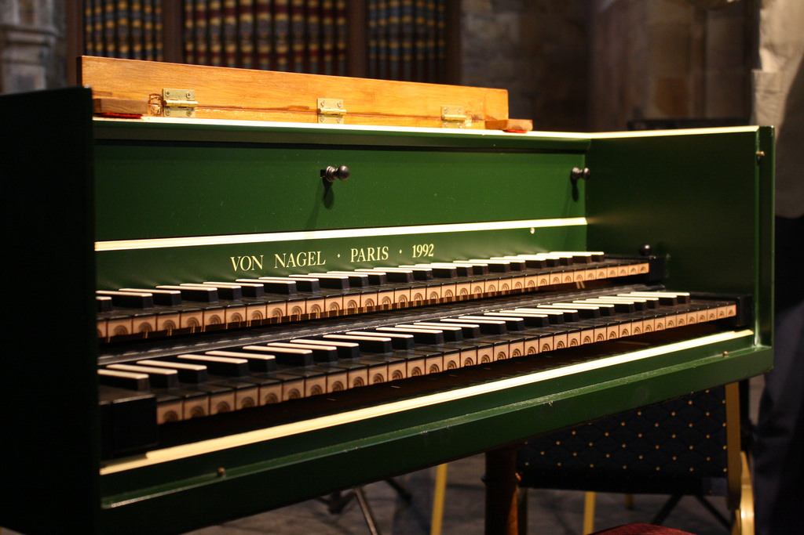

George Frideric Handel
(handle)1685–1759
Johann Sebastian Bach
(bark) 1685–1750
He is considered greatest composer in the baroque period.
Also, he wrote over 1000 pieces of music (that's a lot),
but we don't have all of them because many of the music was lost.

Antonio Vivaldi
(Vi-val-dee) 1678-1741

Johann Pachelbel
(Pack-el-bell) 1653-1706

Harpsichord
Although this is not a composer, this instrument was widely used during this time period.